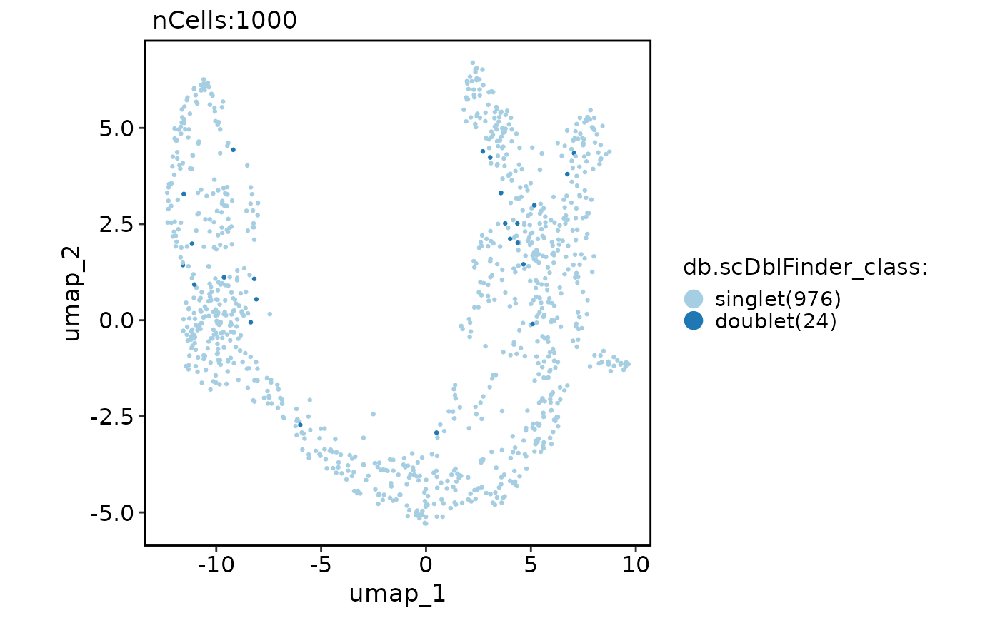

Identification of heterotypic (or neotypic) doublets in single-cell RNAseq data.
Usage
RunDoubletCalling(
srt,
assay = "RNA",
db_method = "scDblFinder",
db_rate = ncol(srt)/1000 * 0.01,
...
)Arguments
- srt
A Seurat object.
- assay
The name of the assay to be used for doublet-calling. Default is "RNA".
- db_method
Doublet-calling methods used. Can be one of
scDblFinder,Scrublet,DoubletDetection,scds_cxds,scds_bcds,scds_hybrid- db_rate
The expected doublet rate. By default this is assumed to be 1% per thousand cells captured (so 4% among 4000 thousand cells), which is appropriate for 10x datasets.
- ...
Arguments passed to the corresponding doublet-calling method.
Value
Returns Seurat object with the doublet prediction results and prediction scores stored in the meta.data layer.
Examples
data(pancreas_sub)
pancreas_sub <- standard_scop(pancreas_sub)
#> ℹ [2025-09-07 13:40:43] Start standard scop workflow...
#> ℹ [2025-09-07 13:40:43] Checking a list of <Seurat> objects...
#> ! [2025-09-07 13:40:44] Data 1/1 of the `srt_list` is "unknown"
#> ℹ [2025-09-07 13:40:44] Perform `NormalizeData()` with `normalization.method = 'LogNormalize'` on the data 1/1 of the `srt_list`...
#> ℹ [2025-09-07 13:40:46] Perform `Seurat::FindVariableFeatures()` on the data 1/1 of the `srt_list`...
#> ℹ [2025-09-07 13:40:46] Use the separate HVF from srt_list
#> ℹ [2025-09-07 13:40:47] Number of available HVF: 2000
#> ℹ [2025-09-07 13:40:47] Finished check
#> ℹ [2025-09-07 13:40:47] Perform `Seurat::ScaleData()` on the data...
#> Warning: Different features in new layer data than already exists for scale.data
#> ℹ [2025-09-07 13:40:47] Perform pca linear dimension reduction on the data...
#> StandardPC_ 1
#> Positive: Aplp1, Cpe, Gnas, Fam183b, Map1b, Hmgn3, Pcsk1n, Chga, Tuba1a, Bex2
#> Syt13, Isl1, 1700086L19Rik, Pax6, Chgb, Scgn, Rbp4, Scg3, Gch1, Camk2n1
#> Cryba2, Pcsk2, Pyy, Tspan7, Mafb, Hist3h2ba, Dbpht2, Abcc8, Rap1b, Slc38a5
#> Negative: Spp1, Anxa2, Sparc, Dbi, 1700011H14Rik, Wfdc2, Gsta3, Adamts1, Clu, Mgst1
#> Bicc1, Ldha, Vim, Cldn3, Cyr61, Rps2, Mt1, Ptn, Phgdh, Nudt19
#> Smtnl2, Smco4, Habp2, Mt2, Col18a1, Rpl12, Galk1, Cldn10, Acot1, Ccnd1
#> StandardPC_ 2
#> Positive: Rbp4, Tagln2, Tuba1b, Fkbp2, Pyy, Pcsk2, Iapp, Tmem27, Meis2, Tubb4b
#> Pcsk1n, Dbpht2, Rap1b, Dynll1, Tubb2a, Sdf2l1, Scgn, 1700086L19Rik, Scg2, Abcc8
#> Atp1b1, Hspa5, Fam183b, Papss2, Slc38a5, Scg3, Mageh1, Tspan7, Ppp1r1a, Ociad2
#> Negative: Neurog3, Btbd17, Gadd45a, Ppp1r14a, Neurod2, Sox4, Smarcd2, Mdk, Pax4, Btg2
#> Sult2b1, Hes6, Grasp, Igfbpl1, Gpx2, Cbfa2t3, Foxa3, Shf, Mfng, Tmsb4x
#> Amotl2, Gdpd1, Cdc14b, Epb42, Rcor2, Cotl1, Upk3bl, Rbfox3, Cldn6, Cer1
#> StandardPC_ 3
#> Positive: Nusap1, Top2a, Birc5, Aurkb, Cdca8, Pbk, Mki67, Tpx2, Plk1, Ccnb1
#> 2810417H13Rik, Incenp, Cenpf, Ccna2, Prc1, Racgap1, Cdk1, Aurka, Cdca3, Hmmr
#> Spc24, Kif23, Sgol1, Cenpe, Cdc20, Hist1h1b, Cdca2, Mxd3, Kif22, Ska1
#> Negative: Anxa5, Pdzk1ip1, Acot1, Tpm1, Anxa2, Dcdc2a, Capg, Sparc, Ttr, Pamr1
#> Clu, Cxcl12, Ndrg2, Hnf1aos1, Gas6, Gsta3, Krt18, Ces1d, Atp1b1, Muc1
#> Hhex, Acadm, Spp1, Enpp2, Bcl2l14, Sat1, Smtnl2, 1700011H14Rik, Tgm2, Fam159a
#> StandardPC_ 4
#> Positive: Glud1, Tm4sf4, Akr1c19, Cldn4, Runx1t1, Fev, Pou3f4, Gm43861, Pgrmc1, Arx
#> Cd200, Lrpprc, Hmgn3, Ppp1r14c, Pam, Etv1, Tsc22d1, Slc25a5, Akap17b, Pgf
#> Fam43a, Emb, Jun, Krt8, Dnajc12, Mid1ip1, Ids, Rgs17, Uchl1, Alcam
#> Negative: Ins2, Ins1, Ppp1r1a, Nnat, Calr, Sytl4, Sdf2l1, Iapp, Pdia6, Mapt
#> G6pc2, C2cd4b, Npy, Gng12, P2ry1, Ero1lb, Adra2a, Papss2, Arhgap36, Fam151a
#> Dlk1, Creld2, Gip, Tmem215, Gm27033, Cntfr, Prss53, C2cd4a, Lyve1, Ociad2
#> StandardPC_ 5
#> Positive: Pdx1, Nkx6-1, Npepl1, Cldn4, Cryba2, Fev, Jun, Chgb, Gng12, Adra2a
#> Mnx1, Sytl4, Pdk3, Gm27033, Nnat, Chga, Ins2, 1110012L19Rik, Enho, Krt7
#> Mlxipl, Tmsb10, Flrt1, Pax4, Tubb3, Prrg2, Gars, Frzb, BC023829, Gm2694
#> Negative: Irx2, Irx1, Gcg, Ctxn2, Tmem27, Ctsz, Tmsb15l, Nap1l5, Pou6f2, Gria2
#> Ghrl, Peg10, Smarca1, Arx, Lrpap1, Rgs4, Ttr, Gast, Tmsb15b2, Serpina1b
#> Slc16a10, Wnk3, Ly6e, Auts2, Sct, Arg1, Dusp10, Sphkap, Dock11, Edn3
#> ℹ [2025-09-07 13:40:48] Perform `Seurat::FindClusters()` with louvain and `cluster_resolution` = 0.6 on the data...
#> ℹ [2025-09-07 13:40:48] Reorder clusters...
#> ! [2025-09-07 13:40:48] Using `Seurat::AggregateExpression()` to calculate pseudo-bulk data for <Assay5>
#> ℹ [2025-09-07 13:40:48] Perform umap nonlinear dimension reduction on the data...
#> ℹ [2025-09-07 13:40:48] Non-linear dimensionality reduction (umap) using (Standardpca) dims (1-50) as input
#> ℹ [2025-09-07 13:40:53] Non-linear dimensionality reduction (umap) using (Standardpca) dims (1-50) as input
#> ✔ [2025-09-07 13:40:57] Run scop standard workflow done
pancreas_sub <- RunDoubletCalling(
pancreas_sub,
db_method = "scDblFinder"
)
#> ℹ [2025-09-07 13:40:58] Data type is raw counts
#> ℹ [2025-09-07 13:40:58] Data type is raw counts
#> ℹ [2025-09-07 13:40:58] Installing package: scDblFinder...
#>
#> ✔ All system requirements are already installed.
#>
#> ℹ No downloads are needed
#> ℹ Installing system requirements
#> ℹ Executing `sudo sh -c apt-get -y update`
#> Get:1 file:/etc/apt/apt-mirrors.txt Mirrorlist [144 B]
#> Hit:6 https://packages.microsoft.com/repos/azure-cli noble InRelease
#> Hit:7 https://packages.microsoft.com/ubuntu/24.04/prod noble InRelease
#> Hit:2 http://azure.archive.ubuntu.com/ubuntu noble InRelease
#> Hit:3 http://azure.archive.ubuntu.com/ubuntu noble-updates InRelease
#> Hit:4 http://azure.archive.ubuntu.com/ubuntu noble-backports InRelease
#> Hit:5 http://azure.archive.ubuntu.com/ubuntu noble-security InRelease
#> Reading package lists...
#> ℹ Executing `sudo sh -c apt-get -y install libcairo2-dev make libcurl4-openssl-dev libxml2-dev libssl-dev libglpk-dev libpng-dev libfreetype6-dev libjpeg-dev libtiff-dev libwebp-dev libicu-dev libfontconfig1-dev libfribidi-dev libharfbuzz-dev`
#> Reading package lists...
#> Building dependency tree...
#> Reading state information...
#> libcairo2-dev is already the newest version (1.18.0-3build1).
#> make is already the newest version (4.3-4.1build2).
#> libcurl4-openssl-dev is already the newest version (8.5.0-2ubuntu10.6).
#> libxml2-dev is already the newest version (2.9.14+dfsg-1.3ubuntu3.4).
#> libssl-dev is already the newest version (3.0.13-0ubuntu3.5).
#> libglpk-dev is already the newest version (5.0-1build2).
#> libpng-dev is already the newest version (1.6.43-5build1).
#> libfreetype-dev is already the newest version (2.13.2+dfsg-1build3).
#> libjpeg-dev is already the newest version (8c-2ubuntu11).
#> libtiff-dev is already the newest version (4.5.1+git230720-4ubuntu2.3).
#> libwebp-dev is already the newest version (1.3.2-0.4build3).
#> libicu-dev is already the newest version (74.2-1ubuntu3.1).
#> libfontconfig1-dev is already the newest version (2.15.0-1.1ubuntu2).
#> libfribidi-dev is already the newest version (1.0.13-3build1).
#> libharfbuzz-dev is already the newest version (8.3.0-2build2).
#> 0 upgraded, 0 newly installed, 0 to remove and 15 not upgraded.
#> ✔ 1 pkg + 111 deps: kept 111 [4.3s]
#> ℹ [2025-09-07 13:41:02] All packages installed successfully
#> Warning: Layer ‘data’ is empty
#> Warning: Layer ‘scale.data’ is empty
CellDimPlot(
pancreas_sub,
reduction = "umap",
group.by = "db.scDblFinder_class"
)
#> Warning: No shared levels found between `names(values)` of the manual scale and the
#> data's fill values.

FeatureDimPlot(
pancreas_sub,
reduction = "umap",
features = "db.scDblFinder_score"
)